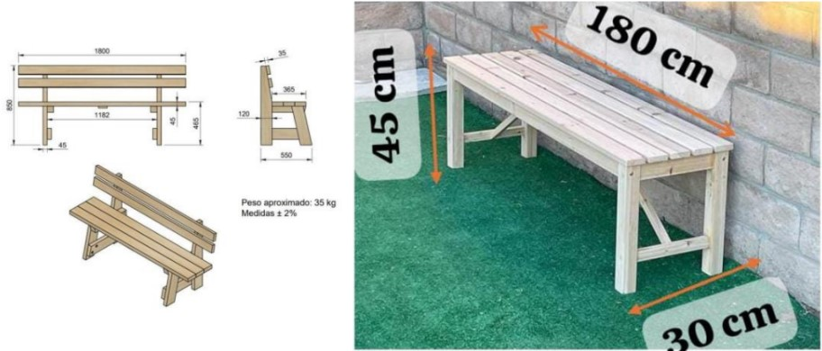
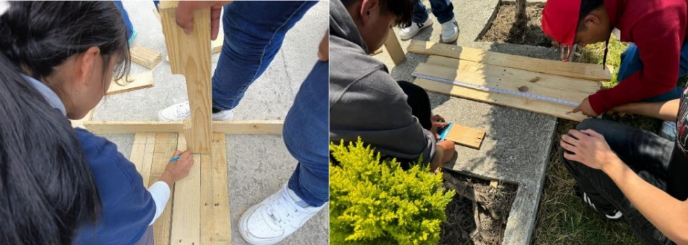
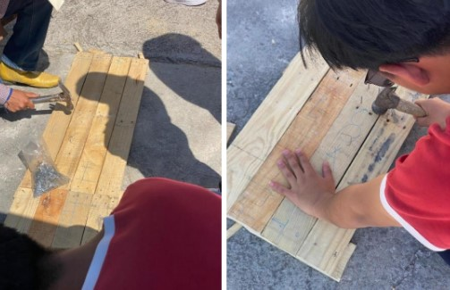

Definir el tamaño y forma: Determinamos las dimensiones de la banca según el
espacio disponible en la escuelita junto con el número de personas que se sienten,
para así facilitar el trabajo ya teniendo en cuenta el número de personas y
medidas donde se pondrán las bancas.
Elección de diseño: Se voto por los siguientes diseños en los cuales nos basamos
en comodidad y diseño y en ergonomía ya que se había otros diseños, pero no se
adaptaban a las características solicitadas gracias a la decisión entre compañeros
de grupo se voto por los siguientes diseños y se llevaron a cabo dichos diseños.

Donde los compañeros como grupo estuvieron tomando medias y marcando
donde se iria a cortar para asi no demorar mucho en la realizacion de las bancas.

Posterior a eso se armo un boceto de como iria la banca para empezar a clavar y
atornillar la madera despues sin tener complicaciones en que faltara algo o que no
encajara bien, teniendo en cuenta que tuviera un buen soporte y buen diseño.
Ya una vez teniendo eso en cuenta empezamos con el armado de las bancas para
posteriormente darle un lijado y depues barnizar para concluir con dichas bancas.

Impacto ambiental y sustentabilidad
Las bancas de madera hechas con materiales reciclados o provenientes de fuentes
sostenibles (como madera certificada FSC) reducen la demanda de nuevas materias
primas, contribuyendo a la conservación de los bosques. Además, si se emplean
maderas recicladas, se minimiza la cantidad de desechos que van a los vertederos.
Huella de carbono reducida:
La madera tiene una huella de carbono menor en comparación con materiales como
el plástico o el metal, ya que requiere menos energía para procesarse. Además, actúa
como un almacén de carbono, ayudando a mitigar el cambio climático.
Reutilización y reciclaje al final de su vida útil:
Las bancas de madera son biodegradables y, si están diseñadas correctamente,
pueden ser reparadas, reutilizadas o recicladas, prolongando su vida útil y
reduciendo los residuos
Impacto social
El proyecto de fabricación de bancas de descanso con tarimas recicladas tiene un
impacto significativo en la comunidad estudiantil seleccionada, particularmente en
el kínder de bajos recursos de San Felipe del Progreso. Este impacto puede
justificarse en varios aspectos clave:
1. Mejora de la Infraestructura Escolar
Las bancas de descanso mejoran significativamente las instalaciones del kínder al
proporcionar espacios cómodos y funcionales para los padres de familia que
acompañan a sus hijos. Esto contribuye a un entorno escolar más acogedor y
funcional para la interacción social de la comunidad educativa.
2. Promoción de la Sustentabilidad
• El proyecto utiliza materiales reciclados como tarimas, fomentando la
reutilización y la conciencia ambiental.
• Se establece un ejemplo positivo para los estudiantes, demostrando cómo
aprovechar los recursos de manera creativa y responsable, al tiempo que se
reduce la generación de residuos.
Creatividad e innovación
Las 2 bancas de descanso diseñadas y creadas por los alumnos del 102 de
informática del Tecnológico de Estudios Superiores San Felipe del Progreso
demuestran creatividad e innovación en su diseño y solución original. Estas bancas
cumplen con los objetivos planteados de:
- Ser funcionales y cómodas para los niños.
- Estar hechas de materiales reciclados y sostenibles.
- Tener un diseño moderno y minimalista que se adapte al entorno educativo.
- Ser seguras y duraderas.
Las soluciones implementadas en estas bancas incluyen:
- El uso de materiales reciclados y sostenibles, como el plástico reciclado y la madera
certificada.
- Un diseño modular que permite el fácil ensamblaje y desensamblaje de las bancas.
- La incorporación de elementos de seguridad, como los bordes redondeados y las
superficies lisas.
- La utilización de colores y texturas que se adapten al entorno educativo y
promuevan la creatividad y la imaginación en los niños.
Estas bancas son un ejemplo de cómo la creatividad y la innovación pueden unirse
para crear soluciones sostenibles y funcionales que beneficien a la comunidad.
Presentación final
Nuestro proyecto nació con la intención de abordar una problemática clave: la falta
de recursos en una escuela de educación inicial. Decidimos diseñar y construir
bancas utilizando materiales reciclados, las cuales fueron tarimas que una empresa
nos dono para poder llevar a cabo nuestro proyecto
Los resultados obtenidos superaron nuestras expectativas. Diseñamos bancas que
no solo son cómodas y seguras, sino que también tienen un diseño moderno que
invita a la interacción en espacios públicos. Asimismo, compartimos un análisis del
impacto ambiental positivo del proyecto, calculando la cantidad de residuos
desviados del vertedero y su contribución a la reducción de nuestra huella de
carbono